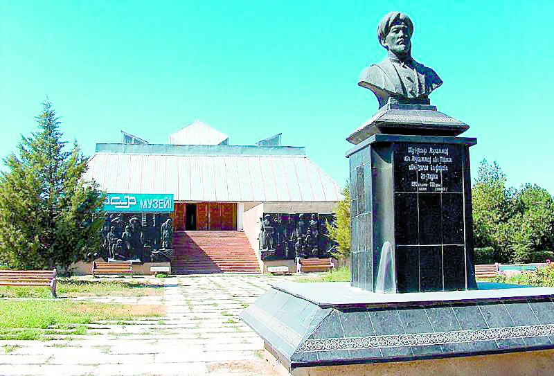
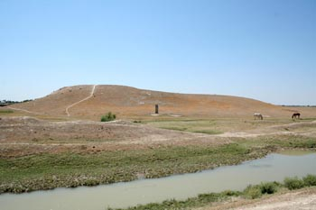
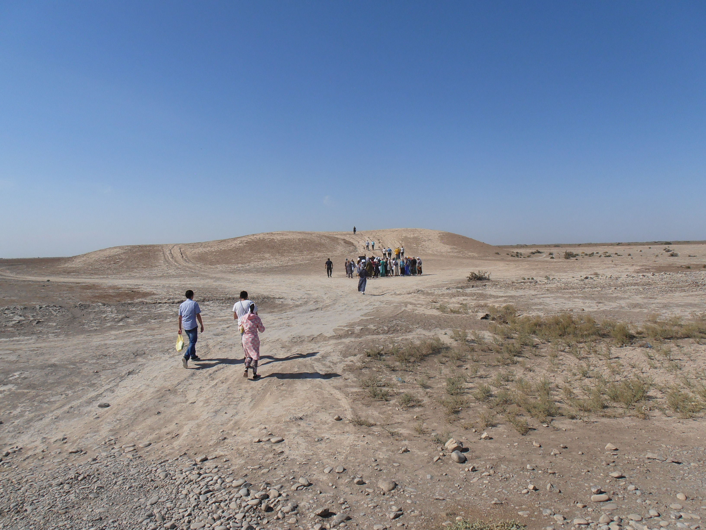

-

Al Farabi Museum
It contains about 6 thousand exhibits related to the life and work of the philosopher, mathematician, theorist of music Nasyr al-Farabi. Moreover, about a thousand exhibits are exclusive. “It is believed that the birthplace of the world famous thinker was our land - the modern Otrar region. And it is a great responsibility to present the main milestones of its life to the visitors of the museum, ”said the designer.
-

Pyshakshy Tobe
It is a rectangular 2-tiered knoll with strongly rounded corners, approximately oriented along the cardinal points. Dimensions at the base from west to east 138 m and north to south 110 m.The western, lower part is an area 7.5 m high and 30 m from west to east, 60 m from north to south. The high part of the hillock also has the shape of an almost square platform with a size of 30x30 m and a height of about 11.5 m. Around this hillock, apparently the remains of a citadel with a small shakhristan or courtyard, there are the remains of various structures in the form of hillocks of different sizes and shapes.
-

Besik Tobe
Besik Tobe was one of the cities of the big Otrar. Remains of a rampart have been preserved along the edges of the site. To the south of the citadel, there are traces of an ancient main canal running from the side of the river. Arys to the foot of the citadel. On both sides of the canal, the remains of large structures have survived, of which one hillock is Zharobe with a diameter of about 100 m and a height of about 6 m. The hillock is cut into 2 parts by the bed of an old irrigation ditch. Excavations in 1949 revealed 3 layers. The first layer is badly scattered and destroyed. The second layer gave the remnants of raw brick walls (42x43x7-9cm) and ash spots. The third layer revealed the remains of raw masonry, 35x16x8 cm in size. A large number of pottery fragments were collected. Excavations in 1970 revealed the later layers of the site of the 10th-12th centuries.